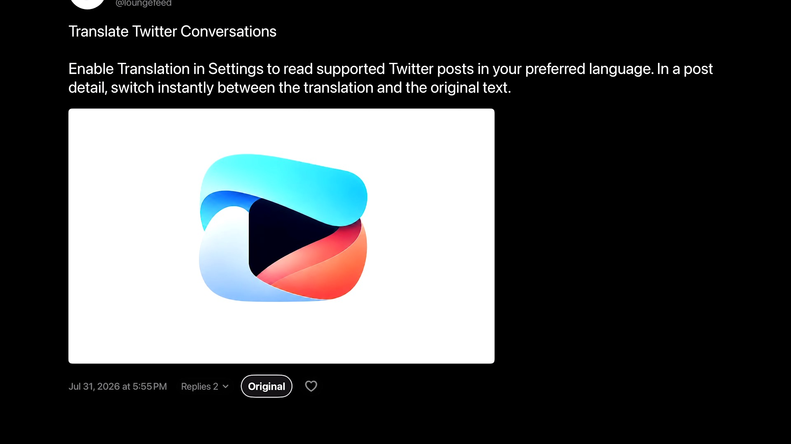

TV-first browsing
Large, focus-aware post cards and clear remote navigation keep attention on the content.
Built for Apple TV
LoungeFeed turns the posts, conversations, photos, and videos you already follow into a calm, remote-friendly viewing experience for the living room.
 Demo content shown
Demo content shown
One viewing space
Move between your signed-in sources without switching devices or adapting to a different television interface each time.
More than a mirrored feed
Large, focus-aware post cards and clear remote navigation keep attention on the content.
Open post details and expand replies without leaving the television viewing flow.
View galleries, portrait media, full-screen images, and adaptive video playback.
Read supported posts and replies in your preferred language, then switch back to the original instantly.
Mark posts for later and organize them into personal collections on Apple TV.
Choose backgrounds, type size, spacing, media balance, playback priority, and Top Shelf style.
Post details
Open a post to see its full text, media, engagement information, and replies. Portrait and landscape media adapt to their natural shape instead of being forced into a phone-sized layout.
Translation
When translation is enabled, supported Twitter posts and replies can appear in the preferred language. A detail-page control switches between the translation and source text immediately.

Local by design
Run LoungeFeed Host on a Mac or iPhone connected to the same local network as Apple TV.
Sign in through the source's own authorization experience and choose what you want to view.
Select the discovered Host and enter its local six-digit pairing code.
Local-first privacy
Source sessions, tokens, feed cache, and media cache remain on the Host device. Apple TV receives a normalized, read-only viewing feed over the local network.
Read the Privacy Policy →No Host required
The Apple TV app includes a guided demo with posts dedicated to Host setup, pairing, browsing, media, translation, collections, personalization, privacy, and support.
Explore mode is available from the connection screen and works without signing in to a source.
Continue with live feeds